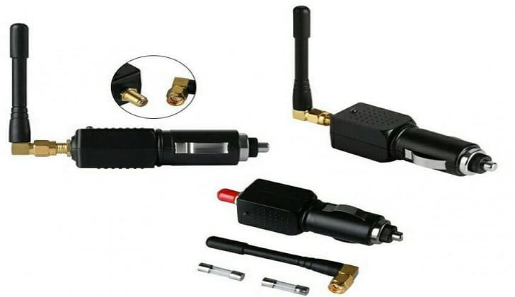

«Глушилка камер» - водителям предложили новый способ избегать штрафов
В продаже появился прибор, который, по заявлениям продавцов, делает ваш автомобиль невидимым для абсолютно всех камер видеофиксации. Машина превращается в «стелс», которой нипочем ни «Стрелка», ни даже измерители скорости, использующие лазерное излучение. Портал «АвтоВзгляд» разобрался, обман это или нет.
Попытками обхитрить камеры видеофиксации наши люди занимаются давно. Переворачивают вверх ногами госномера, заляпывают их грязью. Но это чревато проблемами. Даже если камера действительно не прочитает номер, покрытый толстым слоем грязи, то гаишник, увидевший такой автомобиль на дороге, обязательно его остановит. И вот тогда от 500-рублевого штрафа, а то и лишения прав на шесть месяцев, не уйти.
Сейчас, когда балом правят высокие технологии, появился прибор, который так и называется «Глушилка камер ГИБДД». Выглядит устройство скромно. Антенна, наподобие тех, что применяют в роутерах, небольшой корпус и разъем для подключения этого к автомобильному прикуривателю.
Что же может эта техника? На сайте продавца чудо-девайса обещают, что новинка рынка создаст помехи на расстоянии 50 метров. Иначе говоря, автомобиль станет незаметным для камер. Устройство создает белый шум и глушит все камеры вокруг. То есть это обычный подавитель GPS-сигнала. С таким прибором водителю не будут приходить штрафы за превышение скорости, проезд на красный, пересечение сплошной линии разметки. Даже движение по встречной полосе, утверждают разработчики, останется безнаказанным!
Действие глушилок направлено на создание помех в радиусе до 50 метров от источника сигнала, чего обычно явно недостаточно для того, чтобы исказить картинку движущегося транспортного средства и сделать его неузнаваемым. Принцип действия многих анти трекеров включает также подавление сигналов, передающихся для обработки информации с дорожных камер, о местопребывании автомобиля-нарушителя. В теории, видеофиксатору действительно будет сложно определить его скорость, а значит, и предъявить водителю обвинение в лихачестве, и выслать ему «письмо счастья», ГИБДД не вправе. Однако на практике, глушилке требуется определенное время для генерации помех и воздействия на камеру, а при скорости превышающей допустимую она этого сделать не успеет.
Но есть и одно "НО"! Прочитав немало статей на эту тему, мы нашли достаточно много статей, что эти глушилки отлично справляются с подавлением Платон и других наземных систем GPS. Владельцы этих аксесуаров отмечают, что деньги с Платона не списываются с AntiCam.